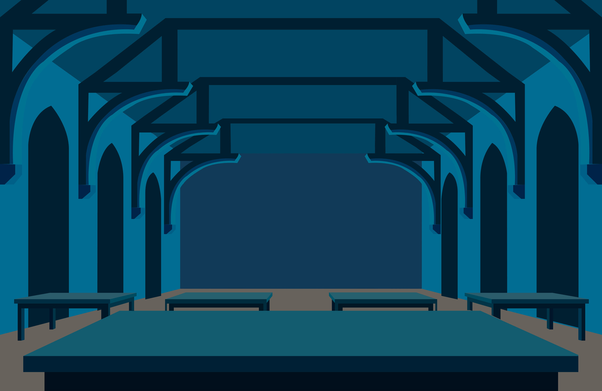
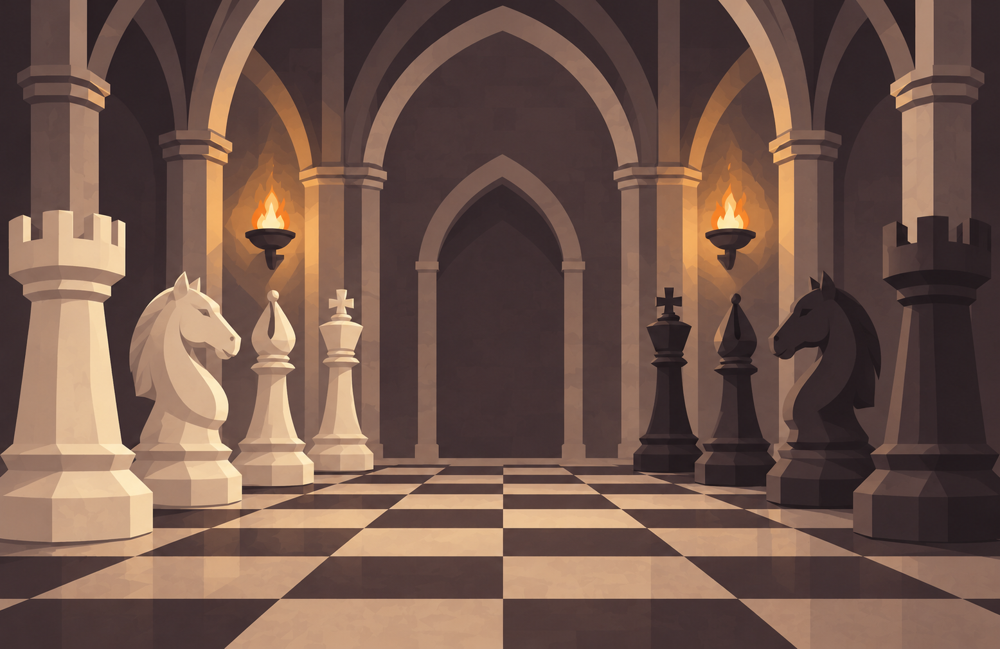

Bienvenido
pequeño mago
¿Cómo te llamas?

Querido/a Paula,
Tenemos el placer de informarle de que ha sido admitido/a en el colegio Hogwarts de magia y hechicería.
Aquí encontrará una lista de todos los libros y equipamiento necesarios.
Atentamente,
Minerva McGonagall.
Las cuatro casas de Hogwarts
En la escuela existen 4 casas, Gryffindor, Ravenclaw, Slytherin y Hufflepuff. Tras recibir tu carta, el sombrero seleccionador te asignará una casa, y tú tendrás que superar pruebas para ganar la copa de la casa.

Gryffindor
Es la casa de los valientes, atrevidos y decididos. Sus miembros destacan por su coraje y su nobleza, incluso cuando tienen miedo.

Ravenclaw
Es la casa de los inteligentes, creativos y curiosos. Sus miembros destacan por su sabiduría y originalidad. Siempre buscan aprender cosas nuevas.

Slytherin
Es la casa de los ambiciosos, astutos y determinados. Sus miembros son ingeniosos y estratégicos. Valoran el liderazgo y la superación personal.

Hufflepuff
Es la casa de los leales y honestos. Sus miembros valoran la amistad y la justicia. Son personas pacientes y comprometidas, dispuestos a ayudar.

Si tuvieras un superpoder, ¿cuál elegirías?
¿Qué es lo más importante para ser un buen amigo?
Te dan a elegir una mascota para llevar al cole, ¿cuál elegirías?
¿Cómo prefieres ganar en un juego?
Enhorabuena, tu casa es...
Gryffindor!!
¡Tu lugar está en Gryffindor! Eres una persona valiente, decidida y con un gran sentido de la justicia. No tienes miedo de enfrentarte a nuevos desafíos ni de defender aquello en lo que crees, incluso cuando las cosas se ponen difíciles. Tu coraje no significa que nunca tengas miedo, sino que sabes encontrar la fuerza para seguir adelante a pesar de él. Valoras la amistad, la lealtad y hacer lo correcto. Tu espíritu aventurero y tu determinación te convierten en alguien capaz de hacer grandes cosas. ¡La verdadera valentía está en tu interior!
Torneo de la Copa de la Casa
Las 4 casas competirán en diferentes pruebas y ganarán puntos cuando ganen. Tu misión es conseguir puntos en diferentes minijuegos para ayudar a tu casa a ganar la copa.
Gryffindor
0
Ravenclaw
0
Slytherin
0
Hufflepuff
0
Sala de los minijuegos

Aula de pociones
En esta prueba tendrás que preparar una poción con el profesor Snape.

Llaves voladoras
En esta prueba tendrás que atrapar la llave vieja del castillo.

Ajedrez mágico
En esta prueba tendrás que derrotar al rey del ajedrez.
Sala de pociones
En esta prueba deberás crear una poción con el profesor Snape. Pero cuidado, la poción solo funcionará si agregas los ingredientes en el orden correcto, si no lo haces, explotará.
Ten cuidado y memoriza bien el orden de los ingredientes antes de comenzar a jugar. El orden es el siguiente:

1. Hojas de mandrágora.

2. Ojos de araña.

3. Pelo de unicornio.

4. Baba de sapo.

5. Escamas de dragón.

6. Cola de escorpión.

¡Enhorabuena!
Conseguiste hacer la poción perfecta. El profesor Snape te da 50 puntos para tu casa.
Las llaves voladoras
En esta prueba deberás atrapar la llave vieja del castillo para poder abrir la puerta y continuar al siguiente minijuego.
Pero no será tan fácil, en cuanto comiences el juego verás un montón de llaves volando por el espacio, intentando distraerte para que no veas la llave vieja. Deberás tener la vista de un verdadero buscador de quidditch y atrapar la llave rápido.

Llaves normales.

Llave vieja del castillo.
¡Enhorabuena!
Conseguiste encontrar la llave correcta. Se suman 50 puntos para tu casa.
El ajedrez mágico
En esta prueba deberás derrotar al rey del ajedrez. ¿Cómo? Las piezas de ajedrez se iluminarán de forma aleatoria en 8 rondas diferentes, en cada ronda se sumará una pieza nueva y se aumentará la dificultad.
Tu objetivo es hacer click en las piezas de ajedrez que se hayan iluminado en esa ronda, y en el mismo orden con el que se han ido iluminando. Si llegas a la ronda donde se iluminan las 8 piezas y consigues acordarte del orden correcto, habrás derrotado al rey.
Ronda 1 de 8
¡Enhorabuena!
Conseguiste derrotar al rey del ajedrez. Se suman 50 puntos para tu casa por tu gran ingenio.